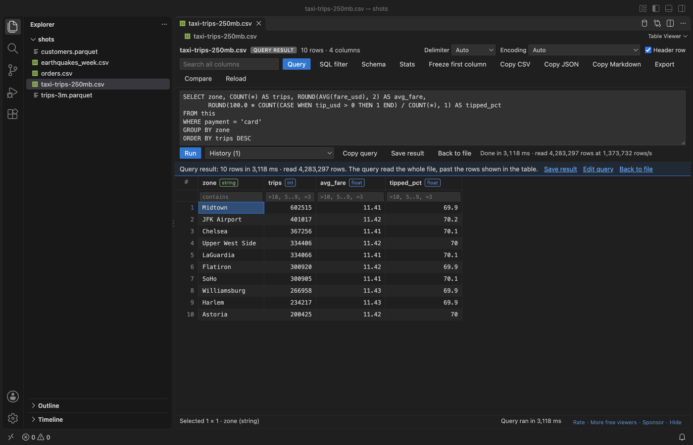

Open files in VS Code and Cursor / Tables and data
Run a SQL query on a CSV file in VS Code
VS Code opens a CSV file as text and has no SQL. Table Viewer (listed as XLSX Viewer & Excel Viewer) opens the CSV as a table, and its Query button runs a SELECT on it with WHERE, GROUP BY, HAVING and ORDER BY. Nothing to install besides the extension, and nothing leaves your computer. Queries are free on the rows the table holds, up to 1,000,000 rows and 512 MB of a CSV. Zovo Pro (USD 19 once) adds whole-file queries that stream a CSV of several GB, with 3 free tries.
Free, MIT license. Extension ID zovo.table-viewer-vscode, version 0.5.7. Needs VS Code 1.90.0 or newer.

Steps in VS Code
- Install Table Viewer from the Marketplace, or press Ctrl+P (Cmd+P on macOS) and run
ext install zovo.table-viewer-vscode. - Right-click the
.csvfile in the Explorer and pick "Open in Table Viewer", or click the table icon at the top right of the text editor. A CSV keeps opening as text by default. - Check the Delimiter list and the Header row box in the toolbar. The delimiter is found on its own, and the list fixes a wrong guess.
- Click Query and write a SELECT.
FROM thisis the open file, for exampleSELECT zone, COUNT(*) AS trips, ROUND(AVG(fare_usd), 2) FROM this WHERE payment = 'card' GROUP BY zone ORDER BY trips DESC. - Press Ctrl+Enter (Cmd+Enter on a Mac) or click Run. Progress shows in rows per second, with a Cancel button.
- The result opens in the same grid. Sort it, filter it, click Stats, or click Save result for a CSV, TSV, JSON or JSON Lines file. Back to file shows the CSV again.
Where Zovo Pro saves time
Opening the CSV, sort, filters, the SQL filter, Stats and queries over the rows in the table are free, with no sign-in. A CSV under 1,000,000 rows and 512 MB fits in the table, so a free query reads all of it. Stats shows count, nulls, distinct values, min, max, mean and the top values of each column for the rows in view, so simple column summaries need no SQL at all.
A CSV past 1,000,000 rows or 512 MB shows only its first part in the table, and a free query runs on those rows, with a note that says so. Whole-file queries read the whole file as a stream, with only the columns the query uses, so a GROUP BY over a CSV of several GB fits in little memory. In the README test, a 250 MB CSV with 4.3 million rows took about 3 s. The other Pro tools in Table Viewer are JOIN with other files, Save as Parquet, Combine Files and Sheets and Split Table by Column Value, and Pro raises the table defaults to 5,000,000 rows and 2 GB of CSV.
With Whole-file queries (Zovo Pro)
- Open the big CSV in Table Viewer, click Query and run your SELECT. The "Query the whole file" link in the banner runs a row count over every row.
- While you have free tries, the query reads the whole file and the status bar says which try it used. A try counts only when a query ran past the rows in the table.
- After the 3 tries, the query runs on the rows in the table, with a note, and Zovo Pro is offered.
Whole-file queries works 3 times on your computer before it asks for a license, and a try counts only when you get a result. Opening a file shows no popup and no countdown.
Zovo Pro costs USD 19 once. It is not a subscription, and it turns on the Pro tools in every Zovo extension, not only Table Viewer. After a card payment (Stripe) your license key shows on the next page. In VS Code, run "Zovo Pro: Enter Zovo Pro license key" from the Command Palette and paste it. The key is checked on your computer, with no network call. With GitHub Sponsors, pick the "$19 one time" tier, then run "Zovo Pro: I already paid: unlock with GitHub Sponsors" and sign in with the same GitHub account. With PayPal, send USD 19 with "Zovo Pro" in the note and the key comes by email within a day.
A team of 5: USD 59 once, by card or by PayPal. Every rule and every Pro tool is on the Zovo Pro page.
Steps in Cursor, Windsurf or VSCodium
- Open the Extensions view with Ctrl+Shift+X (Cmd+Shift+X on macOS).
- Search for
zovo.table-viewer-vscodeand click Install. Cursor, Windsurf and VSCodium install from Open VSX, where it is published aszovo/table-viewer-vscode. - If your editor has no gallery, download the .vsix from the Open VSX page and run "Extensions: Install from VSIX...".
- Then use it the same way as in VS Code.
What Table Viewer handles
- CSV, TSV,
.taband.psvfiles, with comma, tab, semicolon, pipe or colon delimiters, and UTF-8, UTF-16, Windows-1252, Shift_JIS, GB18030 and other encodings. - Column lists, aliases, WHERE, GROUP BY with COUNT, SUM, AVG, MIN, MAX, COUNT(DISTINCT), MEDIAN and GROUP_CONCAT, HAVING, ORDER BY, LIMIT, DISTINCT, CASE, CAST and subqueries in FROM.
- About 70 text, number and date functions, such as LOWER, SUBSTR, ROUND, COALESCE, STRFTIME and DATE_TRUNC.
- A history of the queries you ran on each file, and Copy query.
What it does not do
- One SELECT at a time. No WITH, no RIGHT or FULL JOIN and no subqueries inside expressions.
- A query stops with a message when it needs more than 512 MB of memory (setting
tableViewer.queryMemoryMB). It does not spill to disk. - Without Pro, a query on a CSV past the table limits reads only the rows in the table.
- Table Viewer is read-only. It never changes the CSV you query.
Other options
- DuckDB. A free SQL engine that reads CSV files directly with
SELECT ... FROM 'file.csv'. Very fast on huge files. You install the command line tool or the Python package. - Rainbow CSV. A free VS Code extension that colors columns and runs RBQL queries. It works on the file as a text document, and VS Code does not hand extensions text documents over 50 MB.
- Python with pandas.
read_csvandgroupbydo the same job in a script. Free, but the whole file goes into memory unless you read it in chunks.
Install counts and Open VSX status were checked on 13 November 2026. Descriptions in quotes are the extensions' own.
Questions
Does a query change my CSV file?
No. Only SELECT runs, and Table Viewer never writes to the file you query. Save result writes a new file that you pick.
Why does the result say the query ran on the rows in the table?
The CSV is larger than the table holds (1,000,000 rows or 512 MB by default), and reading the whole file is the Pro tool. You get a correct answer for the first part of the file, not for all of it.
Can I join a second CSV file in the same query?
Yes, by its path in single quotes, such as JOIN 'customers.csv' c ON .... JOIN with another file is a Zovo Pro tool with 3 free tries. Joining another sheet of the same workbook is free.
Does it work in Cursor or Windsurf?
Yes. Cursor, Windsurf and VSCodium install extensions from Open VSX. Search for the extension in their Extensions view and install it there.
More about Table Viewer
Read the Table Viewer page for every feature and setting, or the source code on GitHub.
Related guides
- XLSX, Excel, CSV & Parquet Viewer on the VS Code Marketplace (also on Open VSX). Opens xlsx, xls, csv and parquet files as a sortable table with SQL filters.
- Open an Excel .xlsx file in VS Code
- Open an Excel file in Cursor
- See a CSV file as a table in VS Code
- Open a Parquet file in VS Code
Zovo Pro and support
Zovo Pro: USD 19 once, every Zovo viewer. It turns on the Pro tools in this extension and in the other Zovo extensions you use. The free features stay free.
After a card payment your license key shows on the next page. Paste it with the command "Zovo Pro: Enter a key".
You can also support the work with no Pro:
Need your format supported?
Open a format request with a sample file, and I reply there whether it can be done. For USD 299 once, through this GitHub Sponsors tier, I add your file format or a missing feature to this extension, with tests, within 7 days.